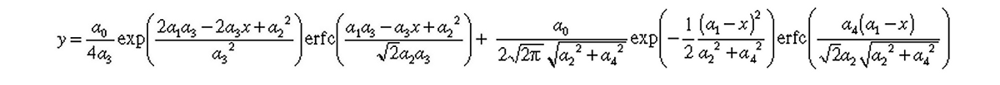

|
Manual
|
SOMO SAS MALS Module Options Panel
Last updated: September 2024

The first two options deal with parameters related to the CorMap-based P-value pair analysis of datasets (see here).
-
The Global PVP Analysis maximum q [A^-1] field defines the upper q value limit (default: 0.05 Å-1).
-
The Global PVP Analysis alpha field defines an inizialization parameter (default: 0.01)
The next set of options deals with the Gaussian mode:
Four alternative round checkboxes are available in the first line:
-
Standard Gaussian. This will generate symmetrical Gaussians (default option).
-
GMG (Half-Gaussian modified Gaussian). This will generate skewed Gaussians according to this equation:.
where a0, a1, a2, and a3 are the area, center, width, and distorsion, respectively, of the half-Gaussian modified Gaussian(s).
-
EMC (Exponentially modified Gaussian). This will generate skewed Gaussians according to this equation:.
where a0, a1, a2, and a3 are the area, center, width, and distorsion, respectively, of the exponentially modified Gaussian(s).
-
EMG+GMG. This will generate skewed Gaussians according to this equation:.

where a0, a1, a2, a3, and a4 are the area, center, width, distorsion 1, and distorsion 2, respectively, of the exponentially + half-Gaussian modified Gaussian(s).
Note: you can switch between these different Gaussian modes also from the MALS main screen (Gaussian options button).
-
The Maximum absolute value of EMG and GMG distortions: field sets limits to the distortions to avoid unreasonably skewed Gaussians (default: 50).
-
The Clear cached Gaussian values button allows to clear all Gaussian data produced during the current session.
The final section of this module presents a set of Miscellaneous Options:
|
The first button on the left-side, Concentration Detector Properties, will lead to another pop-up panel:
|
where you can choose between two mutually exclusive options which concentration detector is utilized sequentially (or in parallel) in your chromatographic system. This sub-module is fully described here.
The button on the right-side, MALS Processing Parameters, will also open another pop-up panel:
|
In this sub-module you can set/modify several parameters that are used in the MALS module to convert "raw" R(θ) data to an absolute scale. These operations utilize the parameters listed in this module, which is fully described here.
The Load FASTA sequence from file button is an application, still under development, that will calculate the partial specific volume PSV from an amino acid sequence in the FASTA format.
Below those buttons there are a series of check buttons:
-
The Save CSV transposed checkboxis allows saving the *.csv files produced in the MALS module in transposed format. Default: unchecked.
-
The Limit Guinier Maximum q*Rg allows to set this limit to a specified value when performing the linear regression in the Guinier analysis to calculate the Rg and I(0) from the I(q) vs q datasets in the Trial make I(q) function (see the corresponding section in the HPLC/KIN main Help page). Default: checked with 1.1 as the limiting product.
Three other checkboxes are then presented, labeled as "Experimental" as of July 2024, pending their full validation in a publication (Brookes and Rocco, manuscript in preparation). They were developed to deal with SEC-SAXS data that have many more q-points available, and usually with greater oscillations in respect to SEC-MALS data. Their applicability to SEC-MALS data has not yet been tested.
-
Experimental: Global Gaussian Initialization smoothing. Maximum smoothing points: followed by a field that becomes available if this checkbox is selected (default: unchecked and 3 maximum smoothing points). This feature was developed to avoid local minimima problems when propagating a set of Gaussians optimized on a few chromatograms to all other chromatograms. Especially for high scattering angles, very noisy data, local spikes can lead the optimization of the individual fits to stop before reaching a true global minimum. Smoothing at the fit level alleviates this problem. Importantly, the final decomposition is done on the original, not on the smoothed curves.
-
Experimental: Global Gaussian cyclic fit. If this checkbox is selected, during the initial Global Gaussian fitting instead of directly fitting the all Gaussian curves simultaneously, each Gaussian first is fit sequentially, keeping the others fixed, followed by fitting all Gaussians simultaneously. This procedure has provided in our still limited tests (as of July 2024) a significant improvement of the individual fits in the global Gaussian decomposition, with fits with bad p-values going globally from 20-30% to 2-3% of the total (Brookes and Rocco, manuscript in preparation). Default: unchecked. Note: this option can be run coupled to the previous one, with potential additional gains in the quality of the fits.
-
Experimental: Global Gaussian - Enable legacy Gaussian fit display. To compare Global Gaussian results obtained without and with the previous two options, selecting this checkbox will enable the display of the individual resulting Gaussians superimposed to the experimental curves. Default: unchecked.
The last checkboxis:
-
Make I(q): drop curves below % of Gaussian max intensity. When recreating I(q) vs. q using Gaussians, they will be generated for all times for all Gaussians. This option will cut-off the tails of each decomposed peak where the signal is already near baseline values, based on a percent value in respect to the maximum intensity of each peak, to avoid generating meaningless extra I(q) vs. q data. Default: 1%.
Pressing Quit will exit from this module without saving any changes. Pressing Ok will exit saving any changes made.
www contact: Emre Brookes
This document is part of the UltraScan Software Documentation
distribution.
Copyright © notice.
The latest version of this document can always be found at:
http://somo.aucsolutions.com
Last modified on September 13, 2024
|